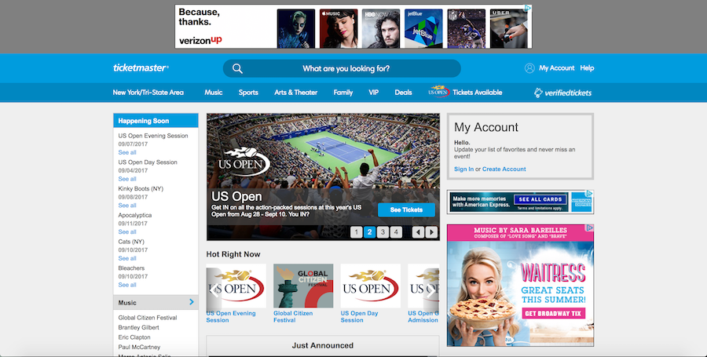
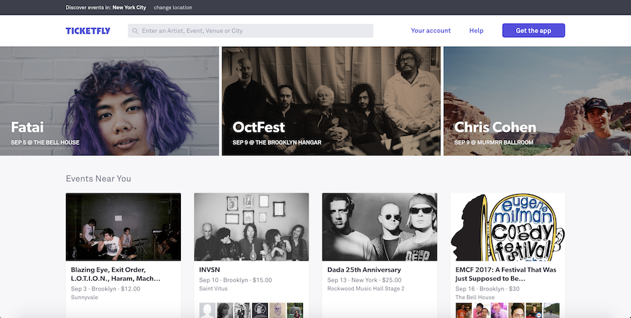

Web Comparison
A Less Successful Website
The Ticketmaster.com is a website that I find less successfully built compare with others. The utility of the website is to help users find their favored events and order tickets for those events online. As we can see from the first sight, the usability of the website is not really satisfying. The advertisement on the top of the page really distracts people from finding the navigation bar or the search toolbar. And also the ad is unrelated with the utility of the site at all. Although this website is not hard for people to learn and accomplish what they want, people are likely to make errors when ordering. First of all, the font on the website is relatively small and uniform, which makes no difference between those detail description of events and titles. Generally speaking, the whole website is really text heavy and information overloaded. The lack of images and colors makes this website unappealing to users. In my opinion, the research tool of the website largely improved the efficiency for user to find a specific event, on the other hand it enhance the usability of the website. However if a user wants to find an event for himself/herself to attend, the research box located at the bottom of the page. Thus I think the website Ticketmaster has a poor utility on promoting events to users. Thus I think it's a less successful website.
A Successful Website
Compare to the website above, Ticketfly.com seems to be a much more successful website. Both websites share the similar purpose. But you can see from the first sight, this website is more concise, readable and helpful. Aside from the high learnability and memorability, this website is much more efficiently designed for user. First of all, its location bar and search bar both locate on the top of the page, so users who come for ordering tickets for a specific event can immediately go for it. While the rest of the user can browse a list of “Events Near You” to gather more information about upcoming events with images and important information: when, where and cost. From this point, we can easily see that the utility of this website is wider than Ticketmaster that we mentioned before. Then When users enter each event, the new page will come up with more description, and is much better edited than the text on Ticketmaster. Thus people are not likely to mistakenly order as event details are clearly listed with emphasize.
Last but not least, the page is also much more satisfying because of its consistency of style, especially font and color. The purple color used in logo and the “Akkurat-Pro” san-serif font is also in other pages. And I really appreciate how they used the bright purple as a highlighter on the website. But in the website we mentioned before, the font changes when you tried to order the ticket as it seems to link to another system. The button for “ticket” is also well stressed on Ticketfly website, which is a sign of good utility. Thus I believe Ticketfly is a more successful and useful website than Ticketmaster.